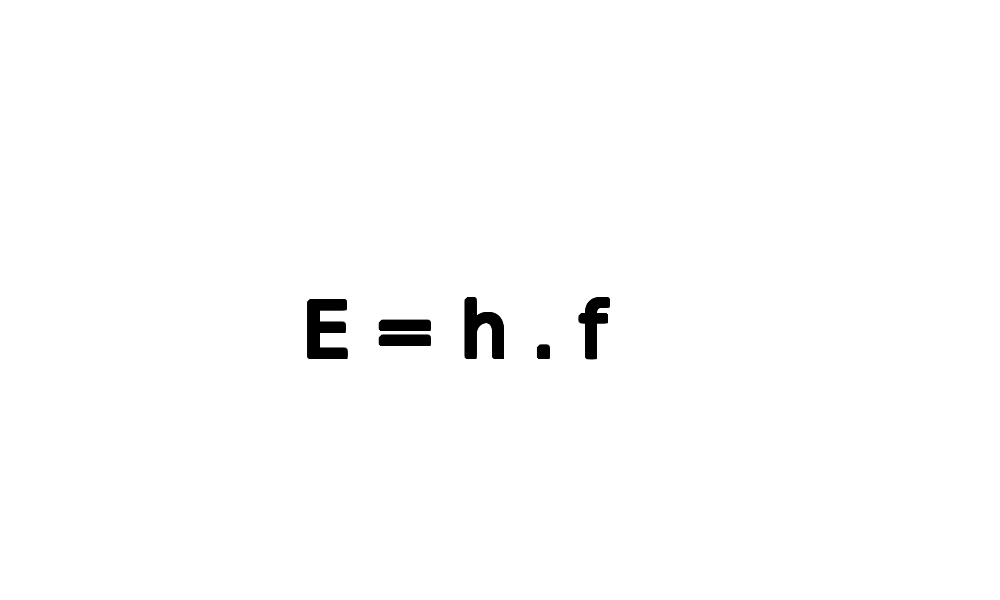
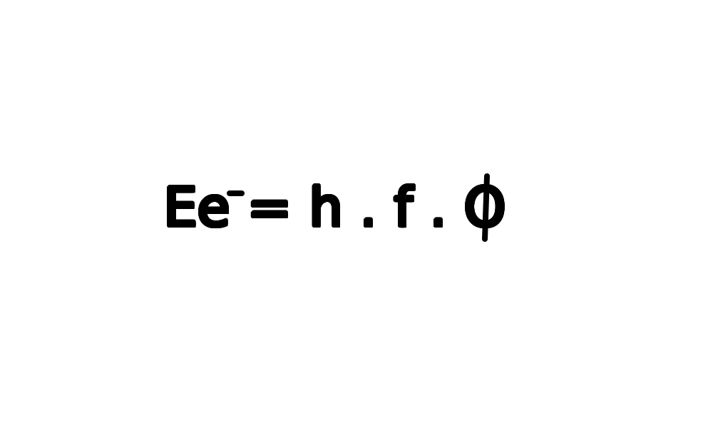

O Efeito Fotoelétrico é um processo de emissão de elétrons por alguns materiais quando iluminados(atingidos) por frequências específicas de ondas eletromagnéticas.
Quando foi descoberto :
O Efeito Fotoelétrico foi descoberto em 1866 pelo físico alemão Heinrich Hertz, ele percebeu que a incidência de luz ultravioleta em chapas metálicas auxiliava na produção de faíscas. Porém a explicação para isso só foi apresentada em 1905 por Albert Einstein
O que Einstein descobriu :
A dúvida que se tinha naquela época era sobre a energia cinética dos elétrons que eram ejetados dos metais, esta grandeza não dependia da intensidade da luz(radiação) que atingia a placa metálica.
Einstein percebeu que o responsável pela ejeção dos elétrons eram os fótons que doavam parte da sua energia para os elétrons ejetando-o da placa,desde que a frequência fosse grande o suficiente para fazer isso, para isso Einstein utilizou as ideias de Max Planck.
Qual era a idéia de Planck usada por Alberte Einstein :
Planck afirmava que a luz irradiada por um corpo negro era quantizada, isto é possui uma energia mínima, como se fossem pequenos pacotes.
Então Einstein ampliou esta ideia para todas as ondas eletromagnéticas, com isso resolvendo o problema do efeito fotoelétrico.
Resumindo
O efeito fotoelétrico é a ejeção de elétrons de um material que exposto a uma radiação em frequência alta o suficiente para ejetar estes elétrons do material, estes elétrons recebem energia dos fótons e se a energia for maior que a mínima necessária para os elétrons serem arrancados da superfície do material ele será arrancado, formando uma corrente de fotoelétrons.
Fórmulas
→ Energia do fóton
E = energia de um único fóton
h = constante de Planck (igual a 4 . 10 elevado a -15)
f = frequência do fóton
→ Energia cinética adquirida pelo elétron
Ee- = energia cinética adquirida pelo elétron
h = constante de Planck (igual a 4 . 10 elevado a -15)
f = frequência do fóton
Ø função trabalho, que é uma característica específica de cada metal
Aplicação do Efeito Fotoelétrico
A mais famosa aplicação do Efeito Fotoelétrico é a célula fotovoltaica utilizada nos painéis solares para produzir energia através da radiação solar